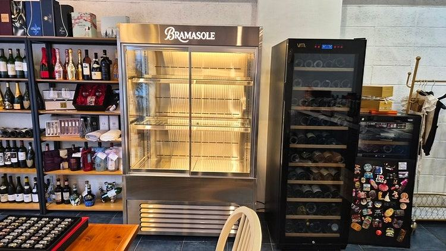
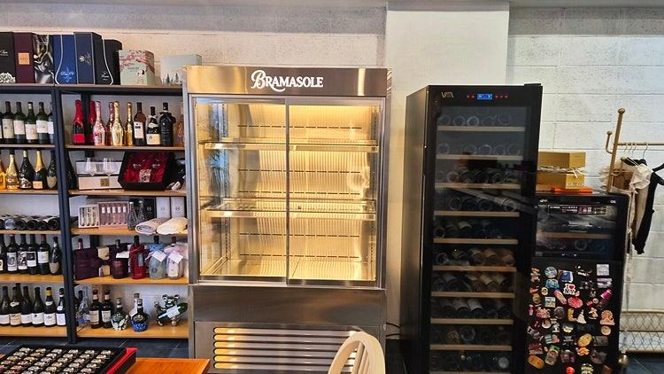

과일진열쇼케이스
과일쇼케이스 사이즈, 박스 크기와 진열 각도로 정하는 법

과일쇼케이스 깊이는 주로 들어오는 과일 박스와 진열 바구니 크기에, 높이와 단 수는 계단식으로 올렸을 때 손님 눈에 맨 위 과일까지 보이는지에 맞춰 정하는 것이 기본입니다. 통과일은 넓은 평대형, 컵과일·주스용 과일은 칸이 나뉜 다단형이 맞으니 판매 비중부터 정하고 폭을 나누세요.
안녕하세요. 과일가게와 생과일 음료 매장의 진열 냉장고를 매장 치수에 맞춰 만드는 한성쇼케이스입니다.
과일가게는 계절마다 주력 과일이 바뀝니다. 여름엔 수박과 참외, 가을엔 사과와 배, 겨울엔 귤과 딸기처럼 크기도 모양도 다른 과일이 번갈아 진열대를 차지하죠.
그래서 사장님들이 "사이즈를 대체 뭐에 맞춰야 하나요?" 하고 물으십니다.
기성 과일냉장고는 정해진 크기로 나오다 보니 박스가 반쯤 걸치거나, 단이 높아 위쪽 과일이 손님 눈에 안 보이는 일이 생깁니다.
과일은 보여야 팔리는 상품이라 이런 작은 어긋남이 매일 판매에 영향을 줍니다.
오늘은 과일쇼케이스 사이즈를 정할 때 매장 치수 외에 꼭 따져야 할 기준들을 순서대로 정리해 보겠습니다.
1. 깊이는 박스와 바구니가 정합니다
과일쇼케이스 깊이는 가장 자주 들어오는 과일 박스나 진열 바구니가 한 칸에 온전히 들어가는지로 정하는 게 출발점입니다.
박스째 진열하는 매장이라면 박스 크기를, 바구니에 덜어 담는 매장이라면 바구니 크기를 재서 알려 주세요.
깊이가 너무 깊으면 안쪽 과일에 손이 닿지 않아 앞쪽만 팔리고 뒤쪽은 오래 남아 무르기 쉽습니다. 손님이 팔을 뻗어 집을 수 있는 깊이인지, 직원이 뒤에서 보충할 수 있는 구조인지도 함께 따져 보세요.
- 주력 과일 박스의 가로·세로
- 진열 바구니 크기
- 손이 닿는 깊이인지
2. 높이와 단 수는 진열 각도로
과일은 계단식으로 비스듬히 올려 보여 주는 진열이 많습니다. 단을 많이 쌓을수록 진열량은 늘지만, 맨 위 칸이 손님 눈높이를 넘으면 그 칸 과일은 보이지 않고 손도 덜 갑니다.
단 간격도 중요합니다. 수박이나 멜론처럼 큰 과일을 올릴 칸과 베리류처럼 작은 팩을 올릴 칸의 높이가 다르니, 계절별 주력 과일을 떠올려 가장 큰 과일이 들어갈 칸을 하나 이상 확보해 두세요.
선반 높이를 조절할 수 있는 구조면 계절이 바뀔 때 대응이 쉽습니다.


3. 통과일과 컵과일 비중으로 폭 나누기
통과일 위주로 파는 가게는 넓게 펼쳐 보여 주는 평대형이 잘 맞습니다. 반면 손질한 컵과일이나 생과일 주스용 과일을 함께 파는 매장은 문 달린 다단형이나 칸이 나뉜 형태가 위생과 온도 관리에 유리합니다.
매장 폭이 한정돼 있다면 두 비중을 먼저 정하고 폭을 나누세요. 예를 들어 입구 쪽은 통과일 평대로 시선을 끌고, 계산대 옆은 컵과일 다단 쇼케이스로 바로 집어 가게 하는 식입니다.
- 통과일·컵과일 판매 비중
- 평대형과 다단형의 위치
- 계산대와의 거리
4. 치수를 줄일 때 지켜야 할 것
좁은 매장에서 폭과 깊이를 줄이더라도 기계실 통풍 공간과 배수 위치는 줄일 수 없습니다. 과일쇼케이스는 과일에서 나오는 수분 때문에 배수가 중요한데, 배수구 주변이 막히면 물이 고여 과일 바닥부터 무릅니다.
실측할 때는 설치 자리와 함께 출입문 폭, 바닥 수평, 콘센트 위치도 같이 재 주세요. 직접 매장을 실측한 뒤 제작하면 기성품을 억지로 끼워 넣을 때 생기는 틈과 동선 문제를 줄일 수 있습니다.
체크리스트
- 주력 과일 박스·바구니 크기
- 맨 위 칸이 손님 눈높이 안인지
- 가장 큰 과일이 들어갈 칸
- 통과일·컵과일 비중과 폭 배분
- 통풍·배수·콘센트 위치
현장에서 자주 보는 경우: 정해진 규격을 억지로 끼워 넣은 매장
업소용 냉장고는 대부분 디자인과 사이즈가 정해진 채로 나옵니다. 1인 창업 매장처럼 작은 공간에서는 매장에 맞는 크기를 찾기 어려워, 결국 매장과 어울리지 않는 기성 사이즈를 사서 억지로 배치하시는 경우를 자주 봅니다.
과일 진열 냉장고도 예외가 아닙니다.
한성쇼케이스는 직영 공장에서 직접 제조하기 때문에 매장을 실측한 뒤 원하는 사이즈와 디자인으로 제작하고, 원하시는 날짜에 맞춰 받으실 수 있도록 일정을 잡습니다.
설치도 직접 진행하며, 사용 중 고장이 나면 A/S로 이어서 관리해 드립니다.





자주 묻는 질문
계절마다 과일이 바뀌는데 한 사이즈로 괜찮을까요?
선반 높이를 조절할 수 있게 만들고, 가장 큰 과일이 들어갈 칸을 하나 이상 확보하면 계절 변화에 대응하기 쉽습니다.
주력 과일 목록을 알려 주시면 칸 구성을 함께 잡아 드립니다.
실측은 직접 해서 보내도 되나요?
가능합니다. 설치 자리의 폭·깊이·높이, 출입문 폭, 콘센트 위치를 재서 사진과 함께 보내 주시면 됩니다.
박스나 바구니 크기도 함께 알려 주세요.
작은 매장인데 평대와 다단형을 둘 다 둘 수 있을까요?
폭을 나눠 각각 작게 제작하면 가능한 경우가 많습니다. 통로 폭을 먼저 확보한 뒤 남는 치수로 두 장비를 나누는 방식으로 설계해 드립니다.
매장 조건에 맞춰 만드는 한성쇼케이스
원하시는 제품 사진과 설치할 공간 사진만 보내 주셔도 매장에 맞는 구성을 추천해 드립니다.
- 전국 240여 개 A/S 전담 센터 운영
- 본사 대량 자재 매입으로 품질 대비 합리적인 가격
- 유럽제·삼성 냉각 콤프레셔 적용
- 국내 최초 쇼케이스 전문 디자이너 상주
매장 폭과 원하는 진열 구성을 알려 주세요. 실측과 견적을 안내해 드립니다.
031-986-2458